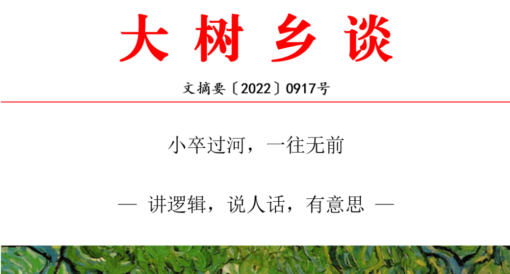

谈谈厅官辞职：出来了，就不要回头

- 1 -
昨天《凡经手必刮油，腐败无处不在》提到一位40正厅实职，在46岁选择离开体制去了公司的，离开的原因据他本人所说，是因为收入、孩子以及身体等原因，有不少读者朋友留言质疑堂堂正厅怎么还会没钱呢？其实这并不奇怪，想要贪污腐败、以权谋私哪有这么容易，而且这位并不是在地方成长起来的，而是在中央和国家机关成长起来的，赶上了上世纪末干部年轻化的浪潮。当时为了推年轻化，采取的措施比较激进，比如直接卡35岁，有的人35周岁直接从正科变成了处长，而刚过了35周岁的就没了这个机会。
而且这位除了年轻，还有两个大优势：学生和对外工作。所以就创造了只属于那个时代的奇迹:毕业第二年副科、第三年正科、第五年副处、第六年正处，到了第七年就副厅了，在此期间还读博、留学，做了访问学者。从副厅到正厅的关键跨越，也只用了6年。时代不一样，所以不能比。对他来说，不能说没有机会贪腐，但并不现实也不值得，没必要为了些蝇头小利毁了大好前途。而在2014年大调薪之前，中央公务员的收入是很低的，小镇当时所有的津补贴包括暖气、加班、奖金甚至把双边公积金也算上，一年也就6万，这位虽然早早就是厅级了，一年收入也就十万多点。
这绝不是哭穷，毕竟把各种保障、地位、影响力等等算进去，还是很不错的，只不过一是没有现钱，二是只能顾自己。所以当这位的母亲重病需要救治的时候，虽然已经是正厅级，但把公积金都取出来也只凑了不到30万，最紧张的时候手里头的钱只剩下5千多，为了凑钱还把自己心爱的相机卖了。贪污腐败的有，但不是人人都贪污腐败，否则中国成啥样了？公务员现在也不是啥高在天上的工作，几乎每个人多少都认识朋友或者同学亲戚当公务员，难道就觉得他们是腐败分子？
后来，这位的母亲还是因病去世了，但由于身在外地，按照组织要求必须向上级请示报备才允许离开，等回到家也没能见到母亲最后一面，而母亲之所以医治无效，也与此前太忙没顾上带母亲看病有关系。因此，这位说因为这件事受到很大刺激，产生了想要离开的想法，进而思考个人奋斗到底是为了什么？小镇是相信的。其实类似的不仅仅这一位，仅小镇认识的人，就颇有因为家庭和收入的问题选择离开的，毕竟无论自己享受多少保障、出去有多么风光，总是代替不了实实在在的钱。
在市场经济条件下，对绝大多数人来说，有钱就是有权，而有钱比有权好用得多，对于有道德洁癖的人来说，靠自己的本事干干净净的赚钱，睡得才踏实。
- 2 -
但是，出来以后就不能回头了，也别想回头了。 这个回头，首先是回不去。中国没有“政商旋转门”，虽然在一些极为特殊的情况下，极为少数的岗位确实会从体制外录用担任公职，但少之又少；而一个潜规则是，凡是从体制内辞职离开的，体制内就不会再要了，这也好理解，既然觉得有更好的路子抛下了原来的体制，那就没必要回来了，何况离开之后的位子、编制早就被人占了。只要选择出去的，心里都很清楚，这是一条不归路，只要离开了，虽然自由了，不至于离开本地都需要报备，还要受到纪律、规章的约束；但有所得必有所失，从此头上也没了一个遮风挡雨的巨伞，就必须自己想办法在风雨中为自己遮风挡雨。
好也罢坏也罢，都是自己的选择。虽然说，只要离开的跟以前的朋友们聊起来，都会说外面多好多好，后悔没早出来等等，有的人确实如此，但也有的人其实并不适应，甚至过的很不怎样，但不能打自己的脸啊，保持体面才能继续在原来的圈子里立足，怎么能说自己不行呢？所以，喝酒的时候，就不要东问西问，相信大家都好就成了。过得好、过不好的原因有很多，每个人都有所不同，但有一个比较关键的共性原因，那就是心态的转变，这也是今天题目的关键。现实不可能回去了，但是有的人心心念念的还是体制内，心态始终没有市场化。但心心念念的并不是体制内不好的那些，比如更低的收入、更严的约束，而是更体面、更稳定。
尤其是一些从大机关出来的处级以上，不少人并不适应，总是想把官场的那套搬过来，又或者幻想自己曾经拥有一个级别，所以自己现在起码还有个光环，就觉得所有人见了他，听了他报的过往，就得敬着他。这类人当初不少是在体制内受委屈了，一个冲动就走了。小镇就认识一个从国家发改委出来的副处，自称以前被司领导针对、歧视，提的特别慢，所以就离开了发改委。但是这位一直有一个执念，就是一定要带团队、当领导，而且一定要把自己的头衔搞得高高的，然后风风光光的去跟以前的人炫耀。
但是他们忘了，厉害的从来只是那个平台、那个身份、那个位子，而不是他这个人。小镇刚到北京的时候，也跟着领导跑了不少省，随便到哪个地方，都能跟省长、副省长碰个杯，也会有省市的秘书长、副秘书长主动递名片，说一句“多多关照”“常联系”“以后私人来一定说一声”等等，但人家奔的是小镇这个人吗？当然不是，还是要有自知之明。比如开头提到的这位正厅辞职去企业的，小镇其实也跟他打过交道，当时他还在体制内，听说他离开之后，小镇觉得挺好，这也算是找到了属于自己的人生路，无论以后走的好也罢坏也罢，都值得肯定。后来看他也搞起了自媒体分享经验，还专门去学习过。
- 3 -
最近看到他分享的一篇，说是前年某地公开招聘开发区管委会负责招商的副主任，要求有体制内外、民企外企的经历，感觉自己很适合，所以就报名了，但结果并无下文，过了半年来了一封邮件，说没进入面试。没进入面试还能专门来一封邮件告知，这已经是职场上非常难得的待遇了，毕竟也考虑到能应聘这个岗位的也不是普通人，总要把礼数尽到，别得罪人。但这位颇有些感慨，说了这么一句话“（我）十年前就正厅，却去申请一个副厅岗位”，竟然还没进入面试。这还是没有放下啊，心里念念不忘的还是那个官帽子。
实际上这种公开招聘的副主任根本不是体制内有级别、有编制的副厅，而是市场化的副主任岗，采取的是合约制，要完成KPI任务的，没有任何行政级别，连科员都不是，决不能以副厅去类比。而作为一个已经离开体制6年的人，早就应该市场化了。什么叫市场？就是把自己卖出去，无论是能力、关系还是资源等等都行，就是要去市场上去堂堂正正的卖，双向选择，让市场标明自己值多少钱。 至于官帽子，人走本就茶凉，关系又能吃几年？倘若能力强，还可以找到各方的共同利益诉求，寻求共赢，维护、开拓新的关系；但如果能力不足，就靠原来的面子，不要说随着时间推移慢慢就淡了，用一次就少一点香火情。
这都是人间常情，又何必埋怨呢？类似的心态，也不仅仅出现在体制内离开的人，一些曾经在大企业、大平台工作的，也往往有这种心态，到什么地方都喜欢拉帮结派，搞价值观推广、对上管理，碰到个曾经在同一个大公司工作过的，就兴奋不已的怀念往昔峥嵘。体制内的厅级、处级，一旦离开后也就要放下了，何况企业的级别岗位？人当落棋不悔，还是要多向前看，别老活在过去。
其他文章推荐
■ 经济如此困难，中国会重新刺激房地产吗？
如果喜欢，还请点赞、“在看”和关注吧 欢迎分享，让更多人发现“大树乡谈”